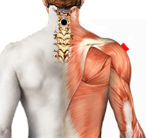

Ballantidum Tifo
Pares
cervical - deltoides
cervical 3 - supraespinoso
bulbo - trapecio
cervical 1 - píloro

Generalidades:
Protozoo ciliado. Crea una membrana que cubre las paredes bronquiales causando insuficiencia respiratoria, retención de líquidos, inflamación, edema, crisis convulsivas, epilepsias.
En la mayoría de los casos es asintomático.
Transmisión:
Por ingestión de alimentos o agua contaminada, (por vía aerea?) *
*Datos para Balantidium coli (checar contagio por rastreo bioenergético).
.
Tema relacionado: